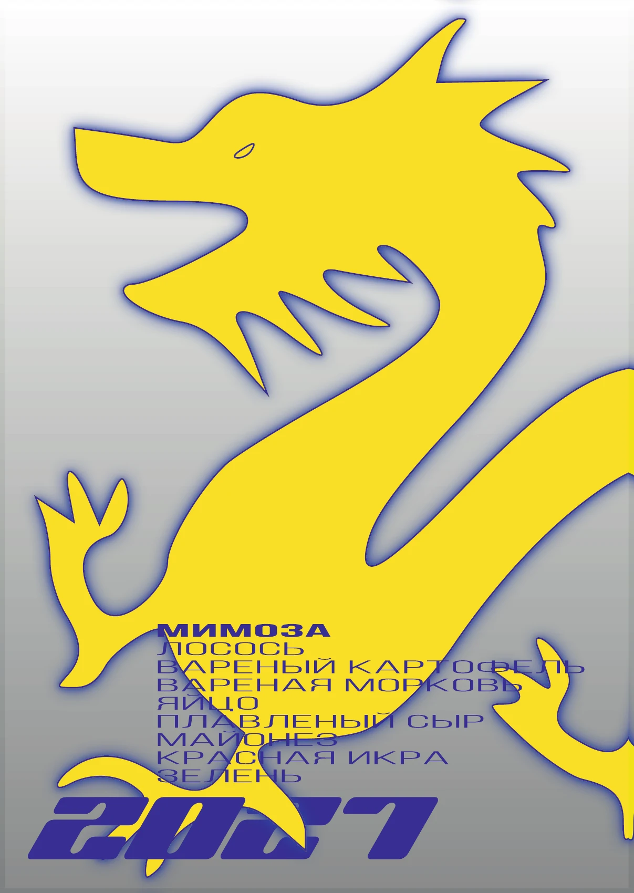
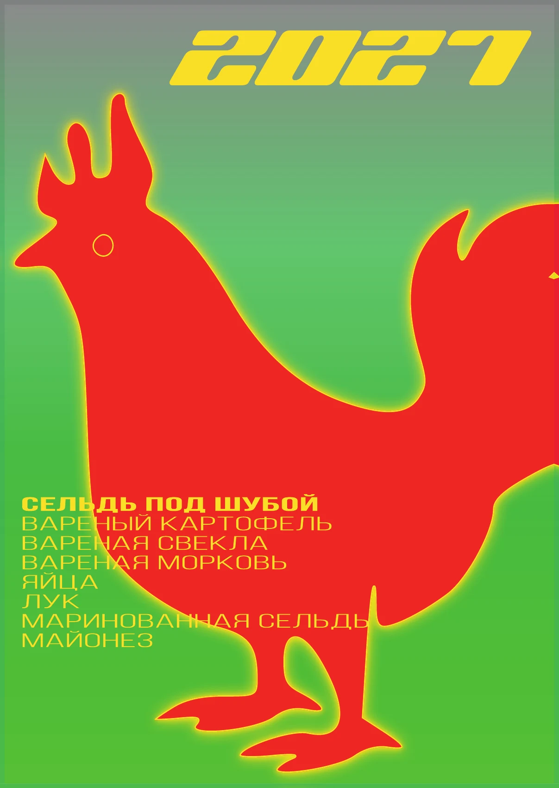
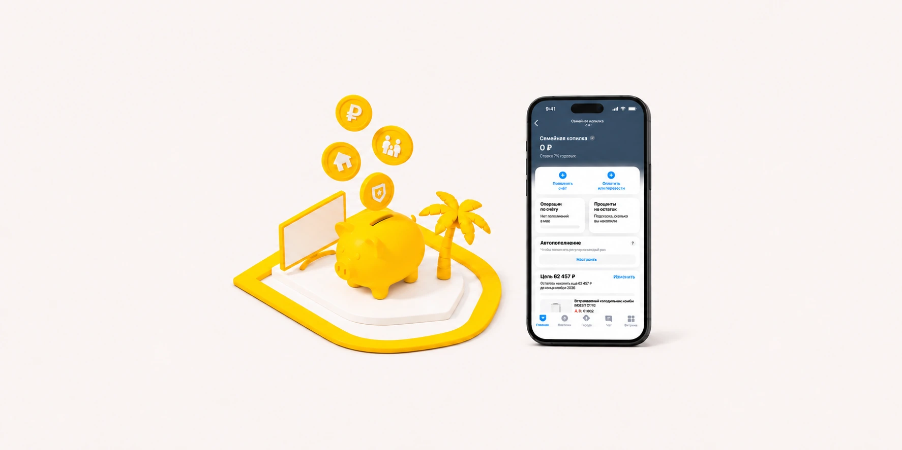

Центральный университет
Работаю ассистентом на курсах бакалавриата. Помогаю преподавателям проводить занятия и координирую проверку работ. Даю студентам обратную связь по заданиям.
Работаю ассистентом на курсах бакалавриата. Помогаю преподавателям проводить занятия и координирую проверку работ. Даю студентам обратную связь по заданиям.
В роли графического дизайнера собрала модульную систему карточек товаров в Figma. Готовые компоненты сократили время подготовки новых карточек в 3–5 раз. Также оформляла материалы для маркетплейсов и корпоративную полиграфию.
Учусь в магистратуре по программе Human Experience Design. Специализируюсь на продуктовом дизайне: исследую пользовательские сценарии, проектирую интерфейсы и собираю прототипы.
Прошла годовой курс «Цифровой дизайн» и получила диплом о профессиональной переподготовке.
Окончила программу «Экономическая безопасность» и получила квалификацию экономиста.
Изучала UX-дизайн по программе Google на Coursera.
Прошла курсы «Новые медиа: SMM и digital-маркетинг» и «Продакт-менеджмент».
Я Валя Васильева, продуктовый дизайнер. Учусь в магистратуре Центрального университета на программе Human Experience Design. Там же работаю ассистентом на бакалавриате: помогаю проводить занятия и даю студентам обратную связь по их работам.
Больше всего меня интересуют интерфейсы сервисов и устройств. Сначала разбираюсь, что человек хочет сделать и где у него возникают трудности. Затем проектирую сценарий, собираю интерактивный прототип и определяю, что проверить: стало ли проще выполнить задачу и помогает ли решение достичь цели продукта.
Опыт в графическом дизайне помогает мне выделять главное на экране. Ещё я участвую в конкурсах плакатов и экспериментирую с тем, как типографика и композиция меняют восприятие одной и той же идеи.
Концепт интерфейса поездки на роботакси. В приложении можно следить за машиной и настроить климат в салоне.
Экран приложения для знакомств, вдохновлённый живописью Иеронима Босха. Атмосфера картины стала основой визуального стиля.
Концепт мобильного магазина аксессуаров. Показала путь от витрины коллекции к карточке товара.
Концепт видеозвонка с 3D-аватаром и субтитрами в реальном времени. Управление звонком остаётся по краям экрана.
Концепт приложения Авито, в котором визуальный стиль и механика Яндекс Музыки перенесены в интерфейс объявлений.
Главная страница Яндекс Go в эстетике фильма «Шаг вперёд» 2006 года. Сервисы вращаются как спиннер, а нажатие на баскетбольный мяч вызывает Татума.
Мобильный лендинг для концептуальной коллаборации кроссовок Nike Mind и художницы Яёй Кусамы. Её узнаваемые точки становятся частью анимации страницы.
Концепт мобильного заказа кофе. На экране можно выбрать напиток и посмотреть доступные варианты.
Открыть интерактивный прототип
Концепт управления умной колонкой с телефона. На одном экране собрала воспроизведение, яркость и громкость.
WEVE — это браузерный редактор для создания абстрактной графики и анимации. Я сделала его, чтобы экспериментировать с фото и видео: накладывать волны, пикселизацию и глитч, смотреть, как эффекты сочетаются, и сохранять результат.
Третье место в «Мета-постерных играх», конкурсе и дизайн-интенсиве от Щёлочи, Т-Банка и Школы дизайна Центрального университета.
Бриф «Sans-serif neue год» предлагал показать Новый год без привычных символов и включить в палитру фирменный жёлтый Т-Банка. Я взяла за основу блюда с праздничного стола и превратила ингредиенты оливье, мимозы с лососем и селёдки под шубой в визуальную игру из трёх плакатов.



Копите вместе на общую покупку. Чем больше участников, тем выше ставка.
Спроектировала сценарий совместных накоплений в приложении Т‑Банка: от открытия счёта и приглашения близких до расчёта пополнений и достижения цели.
Семья хочет накопить на холодильник к определённой дате. В копилке можно выбрать конкретную модель в Т‑Шопинге, узнать, сколько нужно откладывать, и пригласить близких. Участники пополняют счёт и видят общий прогресс.
Спроектировать совместный накопительный счёт, на котором можно начать копить самостоятельно, подключить близких и поставить общую цель. Собрать кликабельный прототип и определить, как проверить механику приглашений и выбора цели.
Сравнила, как ВТБ, Сбер и Т‑Банк устроили совместные финансы. У ВТБ уже была похожая механика с повышением ставки за участие в группе. Поэтому в концепте связала накопления с покупкой: человек может выбрать товар в Т‑Шопинге и сразу увидеть, сколько нужно откладывать к нужной дате. Если группа успевает накопить в срок, концепт предусматривает повышенный кешбэк на покупку.
Если мы предложим семьям и группам друзей/пар вне брака новый сценарий совместного накопления с растущей ставкой, которая зависит от количества участников, и целью, привязанной к конкретному товару или поездке из Т‑Шопинга/Т‑Путешествий, то это приведёт к росту доли завершённых целей и конверсии в покупку внутри экосистемы, потому что финансовая выгода (ставка + повышенный кэшбек) и наглядность цели (не абстрактная сумма, а «эта самая» вещь/поездка) снижают главную причину провала групповых копилок — размытую ответственность и потерю мотивации со временем.
Изучила аналоги, собрала CJM и спроектировала четыре части сценария: открытие копилки, приглашение близких, постановку цели и достижение нужной суммы. Связала экраны в кликабельный прототип Figma.
Для юзабилити-теста запланировала две задачи: пригласить человека по номеру телефона и настроить накопление на холодильник к выбранной дате. На тесте проверила бы, смогут ли участники пройти оба сценария без подсказок и объяснить, сколько им нужно откладывать.
Целевой сценарий от общей цели до покупки. К выбранному сроку группа либо собирает всю сумму, либо может доплатить разницу.
Количество пользователей, которые достигли цели накопления в установленный срок.
Повторное открытие копилки.
Путь начинается в приложении Т‑Банка. После выбора валюты открывается пустая копилка. С неё можно перейти к приглашению близких или постановке цели.
Участника можно выбрать из контактов или пригласить по новому номеру. После отправки приложение подтверждает действие и возвращает на экран копилки.
Сумму и срок можно задать вручную. Если семья уже знает, что хочет купить, она может выбрать товар в Т‑Шопинге. В примере с холодильником копилка берёт цену товара и рассчитывает, сколько нужно откладывать к выбранной дате.
Главный экран показывает, сколько уже накоплено. Когда группа собирает нужную сумму, копилка сообщает, что цель достигнута, и предлагает перейти к покупке.
Карты · Учебный проект
От выбора кафе до подтверждённого столика на четверых.
Спроектировать бронирование из карт для встречи в пятницу в 19:00. Учесть бюджет до 1 500 ₽ на человека и вегетарианское меню. Показать, что происходит, если кафе предлагает другое время.
Разобрала сценарии бронирования, собрала CJM и спроектировала два входа: фильтры в контексте заведения и запрос ИИ-помощнику.
Пользователь с телефона ищет кафе на пятницу, 19:00 · 4 человека · до 1 500 ₽ на человека · вегетарианские блюда
Показала время, средний чек и наличие вегетарианских блюд в одном порядке на каждой карточке. Так проще увидеть, где придётся уступить по времени или уточнить меню.
Спроектировала отдельные статусы для запроса, переноса и подтверждения. Виджет на карте возвращает к актуальному статусу. После согласия на 19:30 кафе ещё должно подтвердить бронь. В сообщение друзьям попадает подтверждённое время.
Пользователь сравнивает кафе с помощью фильтров или формулирует запрос ИИ-помощнику.
Кафе предлагает 19:30 вместо 19:00. После согласия пользователя кафе подтверждает бронь, и деталями можно поделиться.
Собрала интерактивный прототип. В нём можно сравнить кафе, отправить запрос, принять новое время, получить подтверждение и поделиться деталями. Ответы кафе смоделированы в прототипе.
Записки